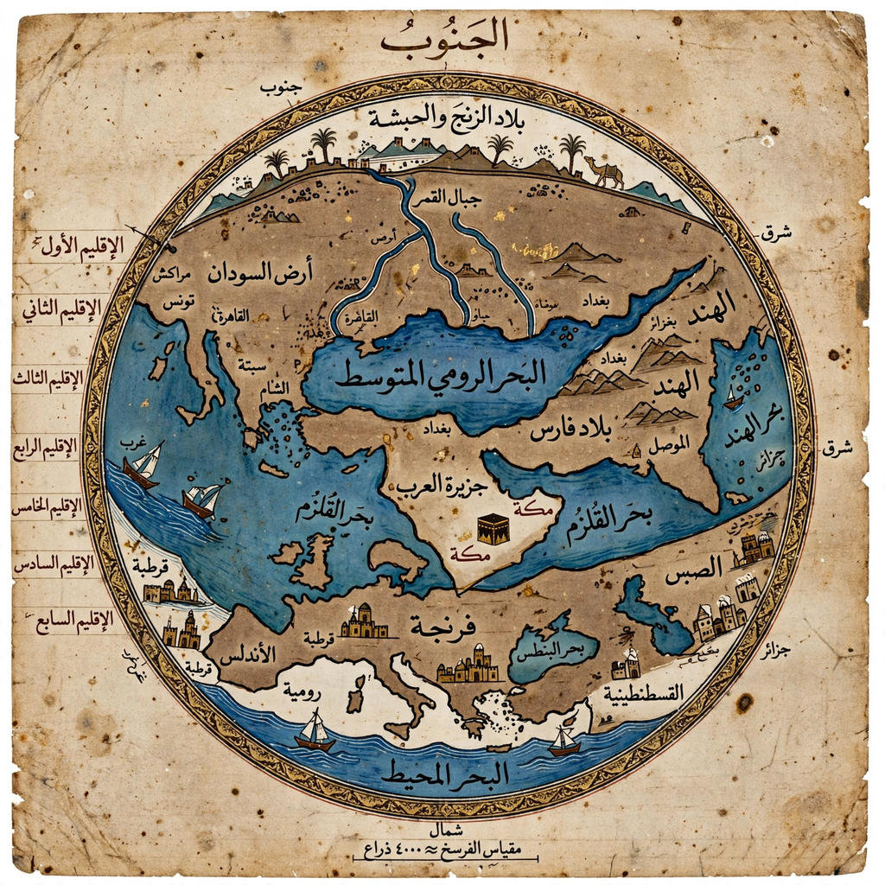

Muhammad al-Idrisi
Abu Abdullah Muhammad ibn Muhammad ibn Abdullah ibn Idris al-Qurtubi al-Hasani as-Sabti, commonly known as al-Idrisi (1100 – 1165/66), was an Arab Muslim geographer, cartographer and Egyptologist who lived in Palermo, Sicily, at the court of King Roger II. His Tabula Rogeriana, completed in 1154, was one of the most advanced medieval world maps.

| Born | 1100, Ceuta, Almoravid Empire |
|---|---|
| Died | 1165/66, Sicily or Ceuta |
| Known for | Tabula Rogeriana (1154) |
| Fields | Geography, cartography |
| Patron | Roger II of Sicily |
Life
Al-Idrisi was born in Ceuta into the Hammudid dynasty, descendants of the Idrisids. He travelled widely in his youth — to Lisbon, the Pyrenees, the French Atlantic coast, southern England, Jorvik (York), and Anatolia — before settling at the Norman court in Palermo, where Roger II commissioned a description of the whole world.
Tabula Rogeriana
Fifteen years in the making, the work combined a silver planisphere (now lost) with the book Nuzhat al-Mushtaq fi Ikhtiraq al-Afaq ("The Book of Pleasant Journeys into Faraway Lands", often called the Book of Roger). It divided the inhabited world into the seven traditional climates, each split into ten sections with its own map, and drew on Ptolemy, earlier Arabic geographers, and the reports of merchants and travellers summoned by the king. It remained among the most accurate world maps for three centuries.
Legacy
Al-Idrisi also wrote on pharmacology and simple drugs. The al-Idrisi Memorial and the Montes Al-Idrisi?? — crater Al-Idrisi on?? Rather: his influence endured through Latin and Arabic copies of his maps, and his accounts remain valuable sources for the geography and trade of the twelfth-century Mediterranean.
See also
Anna Komnene · Roger II of Sicily · Tabula Rogeriana · Ptolemy